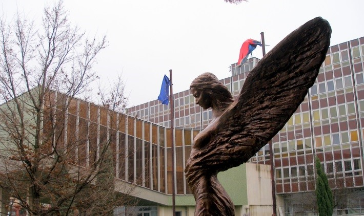
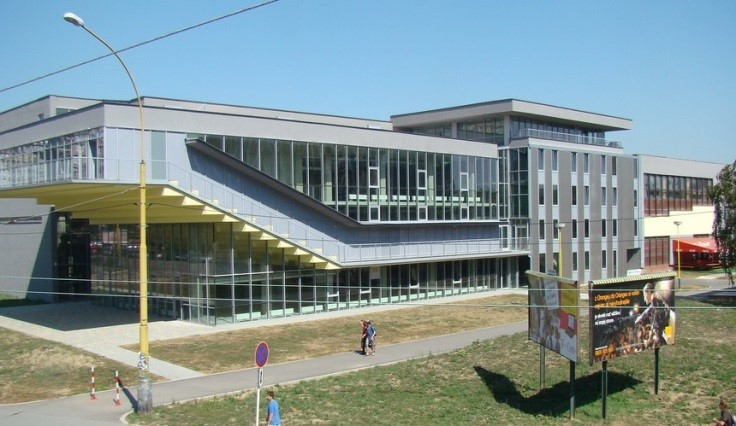

Вищі навчальні заклади Словаччини
Університет Коменського в Братиславі
Університет Коменського є одним з найпрестижніших університетів Словаччини і відомий далеко за межами країни. Університет був заснований в 1919 році і названий на честь Яна Амоса Коменського - відомого педагога і філософа. Це найбільший університет Словаччини, тут навчається більше 30 000 студентів і працює більше 2000 викладачів.
Сайт: uniba.sk


Факультети університету:
- юридичний факультет
- факультет менеджменту
- факультет соціальних і економічних наук
- медичний факультет
- медичний факультет Яссеніева
- фармацевтичний факультет
- філософський факультет
- факультет природничих наук
- факультет математики, фізики та інформатики
- факультет фізичного виховання і спорту
- римсько-католицький теологічний факультет Кирила і Мефодія
- євангелістський теологічний факультет
Університет Матея Бела в Банській Бистриці
Університет Матея Бела відносно молодий, був заснований в 1978 році, але на сьогоднішній день є одним з найкращих вищих навчальних закладів Словаччини. Економічний факультет університету Матея Бела по праву вважається найпрестижнішим у Словаччині. Університет Матея Бела знаходиться в невеликому, але дуже красивому та мальовничому словацькому містечку Банська Бистриця у підніжжя Низьких Татр. В університеті навчається понад 14 000 студентів.
Сайт: www.umb.sk/


Факультети університету:
- економічний факультет
- юридичний факультет
- факультет політичних наук і міжнародних відносин
- факультет природничих наук
- факультет гуманітарних наук
- педагогічний факультет
Жилінский університет
Жилінський університет був заснований в 1953 році в Празі під назвою «Вища залізнична школа». У 1959 році ВНЗ був перейменований на «Вищу транспортну школу» і в 1960 році перенесений з Праги до Жиліну. На сьогоднішній день Жилінський університет є кращим транспортним університетом Європи та одним з кращих технічних університетів Словаччини. Особливо популярні і перспективні транспортний, будівельний і машинобудівний факультети. В даний час в університеті навчається понад 13 000 студентів.
Сайт: www.uniza.sk/


Факультети університету:
- факультет експлуатації та економіки транспорту і комунікацій
- будівельний факультет
- електротехнічний факультет
- факультет машинобудування
- факультет спеціальної техніки
- факультет управління та інформатики
- факультет природничих наук
Економічний університет в Братиславі
Економічний університет в Братиславі був заснований в 1940 році і на сьогоднішній день є кращим вищим навчальним закладом економічного напряму в Словаччині. З дня свого заснування університет дав освіту більш ніж 72 тисячам випускників для розвитку економіки та державного управління. Економічний університет в Братиславі є одним з найважливіших освітніх та науково-дослідних установ у Словацькій Республіці і має багату історію. На сьогоднішній день в університеті навчається близько 15 000 студентів.
Сайт: www.euba.sk/
Факультети університету:
- національно-економічний факультет
- факультет економічної інформатики
- факультет міжнародних відносин
- факультет управління бізнесом
- торговий факультет
- факультет прикладних мов
- підприємницько-економічний факультет
Словацький технічний університет в Братиславі
Словацький технічний університет був заснований в 1939 році і на сьогоднішній день є дуже важливим сучасним освітнім і науковим закладом Словаччини. Словацький технічний університет в Братиславі в 2012 році отримав статус ECTS, що дозволяє двосторонню мобільність студентів в рамках ЄС і більш широкого європейського простору. Університет веде активну науково -дослідну діяльність і успішно бере участь у різних програмах ЄС. В даний час в університеті навчається в середньому 18 000 студентів на всіх рівнях і формах навчання на 7 факультетах.
Сайт: www.stuba.sk/
Факультети університету:
- будівельний факультет
- факультет архітектури
- машинобудівний факультет
- факультет електротехніки та інформатики
- матеріало-технологічний факультет
- факультет інформатики та інформаційних технологій
- факультет хімічної та харчової технології
Прешовський університет
Перші факультети університету в Прешові беруть свій історичний початок ще в 1677 і 1880 році. Прешовський університет має давні традиції освіти і є стабільною складовою словацької вищої освіти протягом тривалого часу. Університет дотримується найвищих стандартів академічного навчання словацьких та іноземних студентів в галузі гуманітарних, богословських, управлінських наук, охорони здоров'я та спорту. У Прешовському університеті в даний час навчається більше 12 000 студентів.
Сайт: www.unipo.sk

Факультети університету:
- факультет менеджменту
- факультет охорони здоров'я
- факультет гуманітарних і природничих наук
- спортивний факультет
- педагогічний факультет
- греко-католицький теологічний факультет
- православний Богословський факультет
- філософський факультет
Трнавський університет
Трнавський університет у Трнаві - один з найстаріших університетів Словаччини. Він був заснований в 1635 році кардиналом Петром Пазмань. Трнавський університет відданий принципам Союзу європейських університетів, які мають повну незалежність від політичної та економічної влади, маючи свободу досліджувати і навчати.
Сайт: www.truni.sk
Факультети університету:
- юридичний факультет
- філософський факультет
- теологічний факультет
- факультет охорони здоров'я та соціальної роботи
- педагогічний факультет
Університет Павла Йозефа Шафарика в Кошице
Університет Павла Йозефа Шафарика в Кошице був заснований в 1959 році в якості другого класичного університету у Словаччині. Університет забезпечує високий рівень освіти, використовуючи новітні наукові дані в широкому міжнародному контексті і співпрацює з багатьма навчальними закладами по всьому світу. В даний час в університеті навчається близько 6000 студентів.
Сайт: www.upjs.sk
Факультети університету:
- медичний факультет
- факультет природничих наук
- юридичний факультет
- факультет державного управління
- філософський факультет
Технічний університет в Кошице
Технічний університет в Кошице був заснований в 1952 році. На сьогоднішній день університет є провідним технічним ВУЗом у Словаччині та відомим університетом на міжнародному рівні. Технічний університет орієнтований на широкий спектр освітніх потреб не тільки в Словаччині, а й у Центральній Європі. В даний час в університеті навчається понад 16 000 студентів.
Сайт: www.tuke.sk

Факультети університету:
- металургійний факультет
- факультет машинобудування
- факультет гірничої справи, екології, управління процесом та геотехнологій
- факультет електротехніки та інформатики
- будівельний факультет
- факультет виробничих технологій
- економічний факультет
- льотний факультет
- факультет мистецтв
Технічний університет в Зволені
Технічний університет в Зволені був заснований в 1952 році. Університет є єдиним вищим навчальним закладом в Словаччині, який готує фахівців у галузі лісівництва, деревообробки, екології та в інших інвайроментальних напрямках (напрями, пов'язані з охороною навколишнього середовища).
Сайт: www.tuzvo.sk/sk
Факультети університету:
- факультет лісівництва
- факультет деревообробки
- факультет екології та енвайроменталістики
- факультет енвайроментальної та виробничої техніки
Університет музичних мистецтв в Братиславі
Університет музичних мистецтв у Братиславі було засновано в 1949 році. Університет навчає фахівців в галузі театру, музики, танців, кінематографії і телебачення. Університет є кращим навчальним закладом в Словаччині в області музичних мистецтв.
Сайт: www.vsmu.sk
Факультети університету:
- факультет музики і танців
- театральний факультет
- факультет кіно і телебачення
Університет образотворчих мистецтв у Братиславі
Висока школа образотворчих мистецтв у Братиславі була заснована в 1949 році і в даний час є європейської школою, яка динамічно розвивається, відома далеко за межами Словаччини. Роботи студентів і викладачів даного університету успішно представлені як у Словаччині, так і в усьому світі.
Сайт: www.vsvu.sk

Факультети університету:
- кафедра архітектурного проектування
- кафедра фотографії та сучасних медіа ресурсів
- кафедра графіки
- кафедра інтермедії та мультимедіа
- кафедра живопису
- кафедра дизайну
- кафедра реставрації
- статуя, об'єкт, інсталяція
- кафедра історії та теорії мистецтва
- кафедра текстильного виробництва
- кафедра прикладного мистецтва
Академія мистецтв в Банській Бистриці
Академія мистецтв в Банській Бистриці була заснована в 1997 році. В академії готують фахівців режисури і професійних акторів, художників, скульпторів, графіків, фахівців у галузі професійного концертного мистецтва: солістів, акторів, концертних і оперних співаків, композиторів і диригентів.
Сайт: www.aku.sk
Факультети університету:
- факультет драматичних мистецтв
- факультет музичних мистецтв
- факультет образотворчого мистецтва
Словацький медичний університет в Братиславі
Словацький медичний університет в Братиславі - один з кращих державних університетів у Словаччині. Протягом всього часу існування університет зберігає традиції освіти медичних працівників, які спеціалізуються на інноваційних дослідженнях.
Сайт: www.szu.sk
Факультети університету:
- медичний факультет
- факультет громадської медицини
- факультет охорони здоров'я
- факультет медсестринської справи і спеціальних медичних досліджень
Університет ветеринарної медицини та фармацевтики в Кошице
Вперше Висока Ветеринарна школа у Словаччині була заснована в 1950 році в м. Кошице. У 1952 році Висока Ветеринарна школа об'єдналася з Високою школою сільського господарства в Нітрі. У 1969 році вступив в силу закон про відновлення Високої Ветеринарної школи як самостійної одиниці. На сьогоднішній день університет є кращим вищим навчальним закладом у галузі ветеринарної медицини та фармацевтики у Словаччині.
Сайт: www.uvm.sk
Факультети університету:
- кафедра анатомії
- кафедра біології та генетики
- кафедра епізоотології та паразитології
- кафедра фармації, фармакології і токсикології
- кафедра гігієни та технології харчуванні
- кафедра хімії, біохімії і біофізики
- кафедра мікробіології та імунології
- кафедра патологічної анатомії та патологічної анатомії
- кафедра загальноосвітніх предметів
- кафедра харчування, дієтології та розведення тварин
- кафедра навколишнього середовища, ветеринарного права та економіки
Словацька сільськогосподарський університет в Нітрі
Словацький сільськогосподарський університет в Нітрі був заснований в 1952 році. Університет є центром аграрної освіти, науки та досліджень. У 2010 році університет отримав престижний статус ECTS. Щорічно в університеті проводиться близько 250 дослідницьких та освітніх проектів. За час свого існування університет підготував понад 60 тисяч випускників.
Сайт: www.uniag.sk/sk
Факультети університету:
- факультет агробіології та харчових ресурсів
- факультет біотехнології та харчової промисловості
- факультет економіки та менеджменту
- факультет європейських досліджень та регіонального розвитку
Університет св. Кирила и Мефодія в Трнаве
Університет св. Кирила і Мефодія в Трнаві був заснований в 1997 році. Це сучасний освітній заклад, який надає студентам широкі можливості як у філософській та художніх сферах, так і в області інноваційних біотехнологій та медіакомунікацій.
Сайт: www.ucm.sk


Факультети університету:
- факультет філософії
- факультет фізіотерапії, бальнеології та лікувальної реабілітації
- факультет природничих наук
- факультет засобів масової інформації
Університет Костянтина Філософа в Нітрі
Університет Костянтина Філософа в Нітрі був заснований державною радою Словаччини в 1996 році. Щорічно в університеті навчається в середньому 12 000 студентів на всіх рівнях і формах навчання на 5 факультетах, що пропонують освіту за акредитованими програмами бакалаврату, магістратури та докторантури.
Сайт: www.ukf.sk


Факультети університету:
- філософський факультет
- факультет природничих наук
- факультет соціальних наук і охорони здоров'я
- факультет центрально-європейських досліджень
- педагогічний факультет
Тренчанський університет Олександра Дубчека
Тренчанський університет Олександра Дубчека в Тренчині був заснований в 1997 році рішенням Уряду Словацької республіки. Університет належить до числа молодих університетів Словаччини. Університет розвиває міжнародне співробітництво, програми міжнародної мобільності, приймає участь у міжнародних заходах і є частиною великої Європейської Асоціації Університетів.
Сайт: http://tnuni.sk


Факультети університету:
- факультет спеціальної техніки
- факультет мехатроніки
- факультет соціально-економічних відносин
- факультет промислових технологій
- факультет охорони здоров'я
Університет Ганса Сельє в Комарно
Університет Ганса Сельє в Комарно - один з наймолодших університетів Словаччини, був заснований в 2003 році Урядом Словацької республіки. Чудово обладнані аудиторії, мультимедійні класи і прекрасна бібліотека створюють комфортні умови для навчання та наукової діяльності в університеті.
Сайт: www.selyeuni.sk


Факультети університету:
- економічний факультет
- теологічний факультет
- педагогічний факультет
Панєвропска висока школа в Братиславі
Панєвропска висока школа в Братиславі є недержавним вищим навчальним закладом університетського типу і була утворена в 2004 році. Стара назва університету - «Братиславська висока школа права». Панєвропска висока школа в Братиславі - єдиний ВНЗ Словаччини, який є одним з 35 європейських університетів - власників Хартії Європейських Університетів (EUC). В університету підписані договори про співпрацю з університетами Відня, Праги, Ганновера, Лювена, Копенгагена, Гренінга, Ноттінгема, Мадрида, Рима, Лінца та багатьох інших. Керує університетом колишній прем'єр-міністр Словаччини JUDr. Ján Čarnogurský, дуже впливовий і освічений політик, що знає російську мову. Панєвропская висока школа в Братиславі забезпечує високоякісну університетську освіту за загальноприйнятими світовими програмам. Студенти мають право навчатися одночасно на двох факультетах: на одному в стандартний час, на іншому - екстерном. Навчання в університеті платне. Вартість навчання на бакалавраті -2200 євро на рік, на магістратурі - 2300 євро, на аспірантурі - 830 євро.
Сайт: www.paneurouni.com


Факультети університету:
- факультет права
- факультет економіки та бізнесу
- факультет засобів комунікації
- факультет інформаційних технологій
Висока школа менеждмента в Братиславі та Тренчині
ПВисока школа менеждмента в Братиславі та Тренчині є першим приватним вищим навчальним закладом у Словаччині. Висока школа менеждмента була відкрита в 1999 році. Засновником університету є американський університет Сity University of Siettle. Висока школа менеждмента в Братиславі та Тренчині є найбільшим філією цього ВНЗ за межами американського континенту. Висока школа менеждмента має дві філії: в Братиславі та в Тренчині, де студенти навчаються на трьох рівнях (бакалаврат, магістратура, докторнатура). Навчання ведеться словацькою та англійською мовою. Студенти, що навчаються англійською мовою, мають можливість отримати диплом не лише словацької зразка, але і американський диплом Сity University. У школі можна навчатися за програмою MBA , яка останнім часом є престижною освітою для майбутніх керівників. Навчання платне. Вартість навчання на бакалавраті - 2050 євро на рік (словацькою мовою), 2300 євро (англійською мовою), на магістратурі - 2500 євро (тільки словацькою мовою), на докторнатурі - 1000 (тільки словацькою мовою).
Сайт: www.vsm.sk


Факультети університету:
- бізнес менеджмент
- факультет економіки та бізнесу